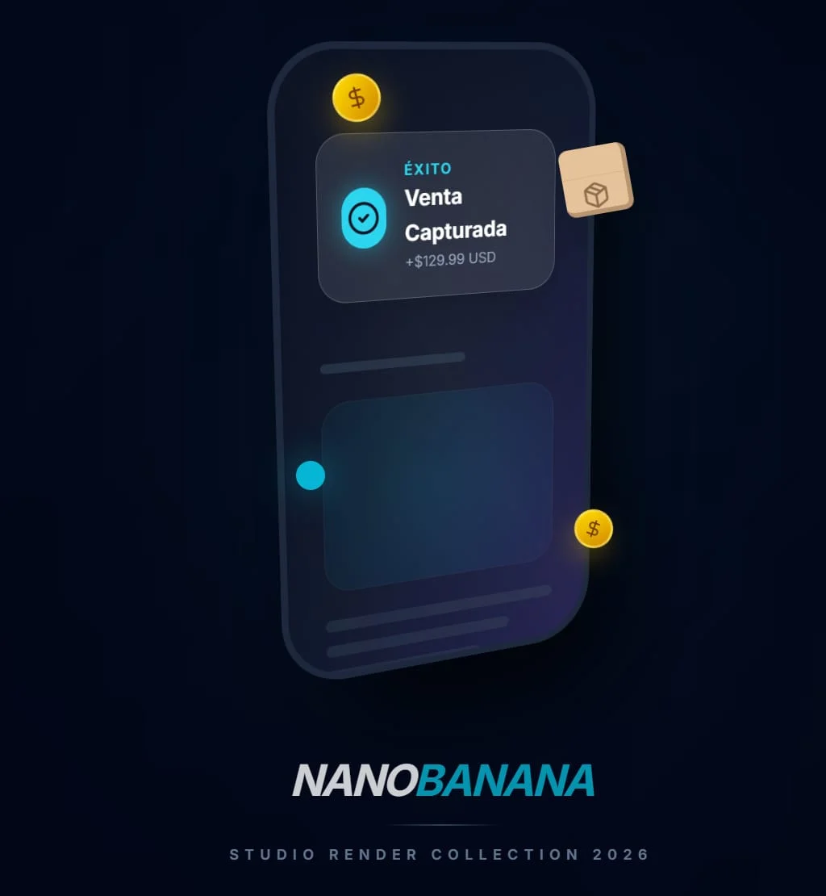
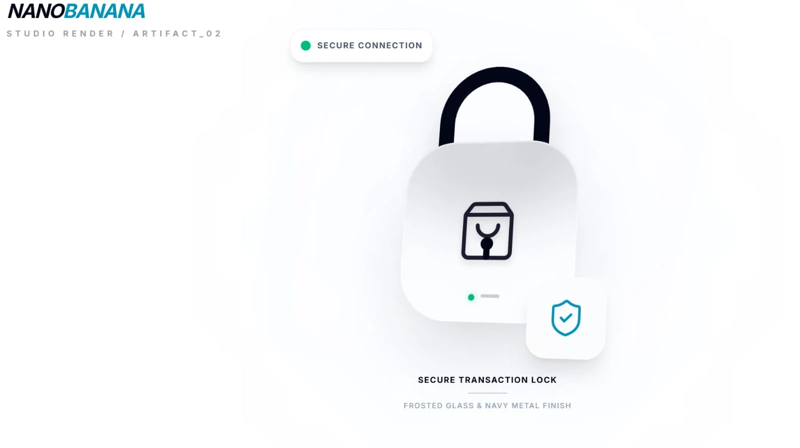
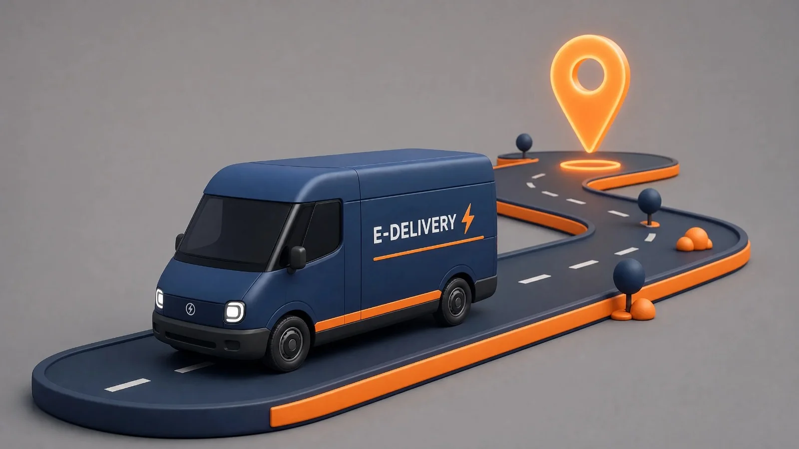
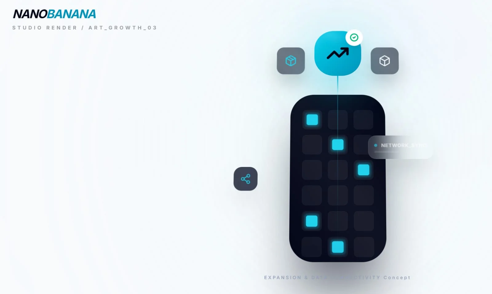
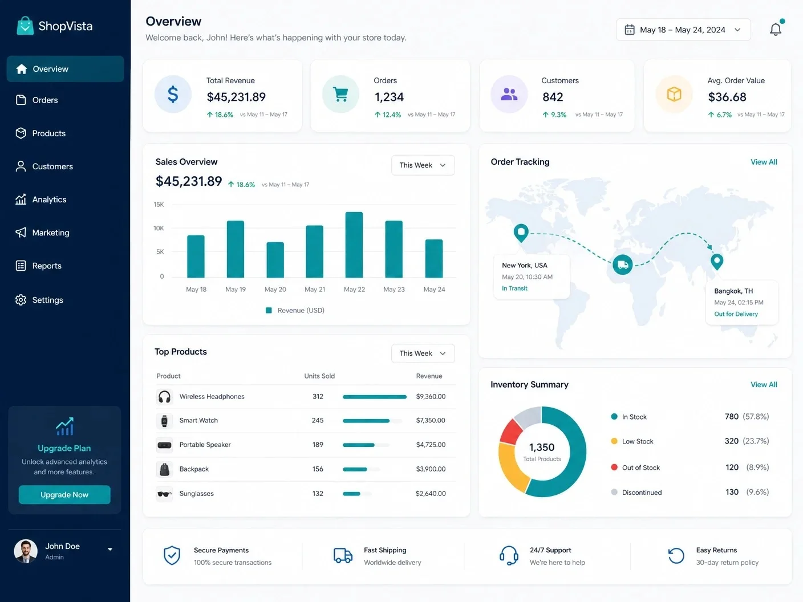

SimpleCart Manager te guía paso a paso: desde diagnosticar tu idea hasta configurar pagos, gestionar inventario y hacer crecer tu tienda digital en Panamá y el mundo.
Todo lo que necesitas para montar, operar y escalar tu e-commerce, explicado en lenguaje simple.

Evalúa si tu idea tiene potencial real de mercado antes de invertir tiempo y dinero.

Elige la plataforma correcta, configura pasarelas de pago y protege a tus clientes.

Gestiona inventario, empaques y mensajería para que cada pedido llegue a tiempo.

Analiza tus datos, automatiza procesos y expande tu operación.
Un proceso estructurado en 4 fases para convertir tu idea en una tienda en línea rentable.
Evaluación de viabilidad del producto y mercado.
Selección de plataformas y pasarelas de pago seguras.
Gestión de envíos y cumplimiento de la última milla.
Análisis de datos y expansión operativa.
Descubre qué es SimpleCart Manager y cómo puede transformar tu emprendimiento digital.
Antes de construir tu tienda en línea, necesitas validar tu idea. Aquí aprenderás a analizar tu producto, conocer a tu cliente y elegir el modelo de negocio que mejor se adapta a ti.
El 70% de los negocios en línea que fracasan no lo hacen por falta de dinero, sino por falta de validación previa. Un diagnóstico sólido te ahorra meses de esfuerzo y recursos mal invertidos.
Aprenderás a evaluar cuatro dimensiones clave: tu producto, tu mercado objetivo, tu competencia y tu capacidad operativa.

¿Resuelve un problema real? ¿Tiene demanda comprobable?
¿Quién te va a comprar? ¿Dónde está? ¿Cuánto paga?
¿Qué hacen los demás bien? ¿Cuál es tu diferenciador?
¿Puedes cumplir los pedidos con los recursos que tienes?
Sigue este proceso estructurado para evaluar tu idea con criterios de negocio reales.
Responde en una oración qué vendes, a quién y por qué lo prefieren frente a la competencia.
Investiga si hay suficiente demanda y qué tan accesible es ese segmento desde Panamá.
Conocer lo que ya existe te permite encontrar huecos de mercado que puedes ocupar.
Estima cuánto necesitas vender para cubrir costos y cuándo empiezas a ganar.
Antes de invertir en tecnología, consigue tu primera venta real.
Plasma todo en un Business Model Canvas simplificado.
El modelo que elijas define cómo generas dinero. Conoce las principales opciones para e-commerce.
Compras productos, los almacenas y los vendes. Control total del precio, marca y experiencia del cliente.
Vendes productos de terceros sin inventario. El proveedor envía directamente al cliente.
Vendes cursos, plantillas, ebooks. Se entrega automáticamente y genera ingresos pasivos.
Los clientes pagan mensual o anual por acceso a productos o servicios. Ingresos predecibles.
Verifica estos puntos antes de avanzar. Si marcas al menos 8 de 10, estás listo.
La siguiente etapa te guiará para elegir tu plataforma de ventas, configurar métodos de pago y construir la infraestructura digital de tu tienda.
Una vez que validaste tu idea, llega el momento de elegir dónde vender, cómo cobrar y cómo proteger los datos de tus clientes. Aquí encontrarás todo lo que necesitas saber para construir los cimientos digitales de tu tienda.
Proteger la información de tus clientes no es opcional: es un requisito legal y de confianza. Desde la configuración de SSL hasta la elección de pasarelas de pago seguras, cada detalle cuenta para que tu tienda transmita profesionalismo y seguridad.
Haz clic en el candado para simular el establecimiento de un canal encriptado seguro, igual que ocurre cuando activas un certificado SSL en tu tienda.
Cada plataforma tiene ventajas según tu presupuesto, conocimiento técnico y nivel de control que necesites.
Plataforma todo-en-uno. Ideal para principiantes. Incluye hosting, plantillas, pasarela de pago y soporte 24/7. Comisiones mensuales + transaccionales.
Plugin de WordPress. Control total del diseño y funcionalidad. Ideal si ya tienes experiencia técnica o presupuesto ajustado. Software gratuito (hosting aparte).
Soluciones locales para LATAM. Integración con Mercado Pago. Buenas para empezar rápido en la región con poco presupuesto inicial.
Alternativas con buen balance entre facilidad y personalización. BigCommerce es fuerte en escalabilidad; Wix es ideal para catálogos pequeños.
Las pasarelas de pago procesan las transacciones de tus clientes de forma segura. Conoce las opciones disponibles.
La más usada en LATAM. Acepta tarjetas, efectivo (Pago Fácil, Rapipago) y transferencias. Ideal para empezar en la región. Comisiones competitivas.
Líder global. Excelente documentación y API. Acepta más de 135 monedas. Ideal si planeas vender internacionalmente. Requiere cuenta en país soportado.
Reconocido mundialmente. Los clientes confían en él. Puedes usarlo como botón de pago o checkout completo. Bueno para empezar sin conocimientos técnicos.
Soluciones de pago locales en Panamá. Payphone permite cobros con tarjeta y código QR. Nequi permite transferencias instantáneas entre usuarios.
Método tradicional sin comisiones. Ideal para ventas B2B o clientes de confianza. Puedes automatizar con alerts bancarios o confirmación manual.
Acepta Bitcoin, USDT o stablecoins mediante pasarelas como Binance Pay o OpenNode. Ideal para un nicho tech-savvy. Volatilidad a considerar.
Antes de lanzar, asegúrate de cumplir con estos puntos para proteger tu tienda y a tus clientes.
La siguiente fase te guiará en la gestión de inventario, empaques, mensajería y operaciones del día a día.
Una vez que tu tienda está en línea y puedes cobrar, el siguiente reto es hacer llegar los productos a tus clientes. Aquí aprenderás a gestionar inventario, elegir métodos de envío y optimizar tus operaciones logísticas.
La logística es el corazón operativo de tu e-commerce. Desde recibir un pedido hasta que llega a la puerta del cliente, cada paso debe estar sincronizado. Una operación eficiente reduce costos, mejora la experiencia del cliente y te permite escalar.
Haz clic en la animación para simular una sincronización de datos logísticos y ver cómo los nodos de tu red de operaciones se activan en tiempo real.
Dominar estas áreas te permitirá operar de forma eficiente y ofrecer una experiencia de entrega que tus clientes recordarán.
Saber qué tienes, dónde está y cuándo se agota. Usa herramientas como hojas de cálculo o sistemas básicos de inventario para empezar.
El unboxing es parte de la experiencia. Elige empaques adecuados al producto, incluye instrucciones y protege contra daños durante el envío.
Selecciona entre opciones locales (Correos de Panamá, mensajería privada) e internacionales (DHL, FedEx). Negocia tarifas por volumen.
Establece políticas claras de envío y devolución. Un proceso de devolución sencillo genera confianza y mejora la reputación de tu tienda.
Desde que el cliente hace clic en "comprar" hasta que recibe su pedido, este es el camino que sigue tu producto.
El sistema te notifica de una nueva compra. Verifica el pago, los datos del cliente y la disponibilidad del producto en inventario.
Localiza los productos en tu inventario, verifica su estado y empaqueta cuidadosamente. Incluye notas de agradecimiento o instructivos.
Entrega el paquete a la mensajería elegida. Genera el número de seguimiento y comparte la información con el cliente.
La entrega final al cliente. Coordina ventanas de entrega, maneja direcciones difíciles y asegúrate de que el cliente reciba satisfecho.
Monitorea el estado del envío. Responde dudas del cliente sobre tiempos, direcciones o daños. Gestiona devoluciones si es necesario.
Revisa métricas como tiempo de entrega, costo por envío y satisfacción del cliente. Usa esos datos para optimizar tu operación.
Verifica estos puntos antes de buscar crecimiento. Si marcas al menos 8 de 10, tu operación está sólida.
La fase final te enseñará a analizar datos, automatizar procesos y expandir tu e-commerce hacia nuevos horizontes.
Una vez que tu operación es estable, el siguiente nivel es escalar. Aquí aprenderás a usar datos para tomar decisiones, automatizar procesos repetitivos, expandirte a nuevos canales y mercados, y preparar tu negocio para crecer sin colapsar.
Escalar no es solo vender más: es crecer de forma sostenible sin que la calidad del servicio, la salud financiera o la cordura operativa se vean comprometidas. Un negocio escalable tiene sistemas, automatizaciones y métricas que permiten multiplicar ventas sin multiplicar problemas.
Haz clic en el cohete para simular el despegue de tu negocio hacia nuevas etapas de crecimiento.
La escalabilidad se construye sobre estos pilares. Domínalos y tu negocio podrá crecer sin límites.
Mide todo: tráfico, conversión, ticket promedio, CAC, LTV, retención. Sin datos, escalar es como volar a ciegas. Define tu panel de métricas clave.
Automatiza correos, notificaciones, facturación, inventario y atención al cliente. Cada proceso manual que elimines es tiempo para crecer.
Vende donde están tus clientes: web, redes sociales, marketplaces (Amazon, Mercado Libre), WhatsApp. Cada canal es una puerta de entrada.
Lleva tu producto a nuevas ciudades o países. Requiere logística internacional, pasarelas multi-moneda y conocimiento de regulaciones locales.
Documenta cada proceso, delega responsabilidades y construye un equipo que opere sin tu supervisión directa. El negocio no debe depender de una sola persona.
Asegura que tu plataforma aguante picos de tráfico, que tus datos estén respaldados y que puedas integrar herramientas sin fricción.
Sigue este roadmap para llevar tu negocio al siguiente nivel de forma ordenada y sostenible.
Antes de escalar, identifica qué está funcionando y qué está al límite. Revisa ventas, costos, capacidad operativa y satisfacción del cliente.
Establece métricas claras que te indiquen si estás creciendo de forma saludable. No todas las métricas importan igual.
Identifica tareas repetitivas y automatízalas. Desde el email de bienvenida hasta la facturación recurrente.
No pongas todos los huevos en una sola canasta. Abre nuevos frentes de venta para diversificar tu tráfico.
Asegúrate de que tu logística, atención al cliente y tecnología puedan soportar 2x, 5x y 10x tu volumen actual.
El crecimiento es un ciclo continuo. Mide resultados, aprende de los errores, ajusta tu estrategia y vuelve a empezar.
Marca estos puntos para saber si tu negocio tiene una base sólida para crecer. Si cumples al menos 8, estás listo para despegar.
Descarga guías, plantillas y herramientas que te acompañarán en cada etapa del crecimiento de tu e-commerce.
Guías, plantillas, herramientas y contenido educativo gratuito para emprendedores y empresas.
Documentos descargables con pasos concretos para cada área de tu negocio.
Formatos listos para usar: inventarios, presupuestos, planes de acción y más.
Selección curada de software y servicios para cada etapa de tu operación.
Contenido formativo gratuito para seguir aprendiendo y mejorando.
Seleccionados para emprendedores como tú.
Los 10 pasos esenciales para lanzar tu tienda online desde cero, con checklist, proveedores y estrategias de lanzamiento.
Formato completo con secciones de análisis de mercado, proyecciones financieras y estrategia operativa.
Tablero en Google Sheets con métricas clave: ventas, conversión, costo de adquisición y valor de vida del cliente.
Checklist completo para evaluar y optimizar tu operación logística: inventario, empaque, envíos y devoluciones.
Grabación del webinar donde analizamos pasarelas, métodos locales, tasas de aprobación y fraude.
Herramienta interactiva para calcular costos logísticos por producto, destino y volumen, optimizando tu margen.
Descarga gratis y comienza a aplicar.
Regístrate y obtén acceso ilimitado a nuestra biblioteca de recursos educativos.